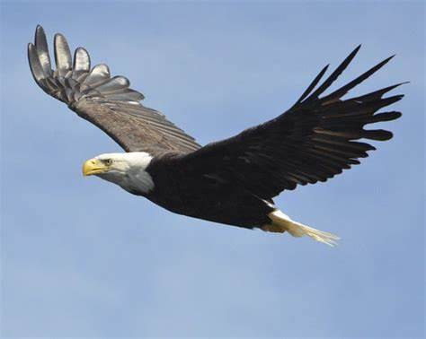
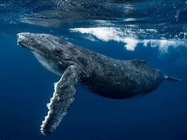

لأسد هو حيوان مفترس يعيش في قارة أفريقيا ويتغذى على لحوم الحيوانات. يسمى الأسد بـ “ملك الغابة”، وتسمى أنثاه بـ “لبؤة”، وصغيره بـ “شبل”. يبلغ وزن ذكر الأسد حوالي 180 كجم، في حين تزن أنثى الأسد حوالى 130 كجم. يمكن أن تصل سرعة الأسد إلى 81 كم في الساعة.

النسر هو طائر جارح يتميز بجناحين طويلين وقويين ومنقار حاد.
يعيش النسر في جميع أنحاء العالم باستثناء أستراليا وأنتاركتيكا.
يتغذى النسر على اللحوم.
يستخدم النسر بصيرته الحادة للبحث عن فرائسه.
يستخدم النسر مخالبه القوية للصيد والدفاع عن نفسه.

الحيتان هي أكبر الحيوانات التي عاشت على الأرض وهي أكبر الحيوانات التي تعيش في المحيط
يمكن أن يكون زعانف الحوت الأحدب ما يصل إلى 15 قدمًا.
الحيتان تتنفس الهواء كما نفعل؛ لذلك عليهم أن يصلوا إلى سطح المحيط للتنفس لأنهم لا يستطيعون التنفس تحت الماء.